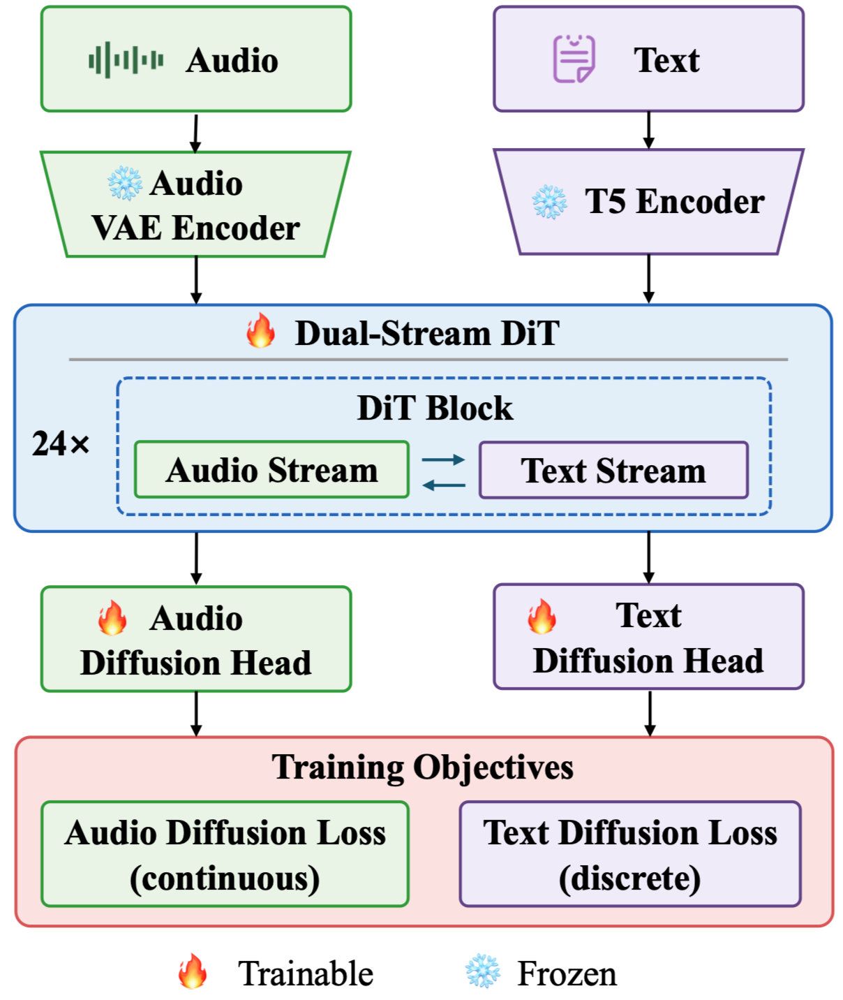

Project Overview
Overview
Overview
UAT unifies audio generation and understanding in a single diffusion framework. It couples continuous latent diffusion for acoustic synthesis with masked discrete diffusion for text prediction, enabling bidirectional audio-text modeling without relying on autoregressive audio tokens.

Demo Section 1
Audio Generation
Audio Generation
Side-by-side text-to-audio outputs for the same prompts. The examples below compare UAT with reference audio and representative unified audio-text baselines.
Demo Section 2
Audio Editing
Audio Editing
Text-guided audio editing demos. Each card shows the source recording, a baseline result, and our model's output for three operation types: adding new sounds, deleting existing sounds, and replacing one sound with another.
Demo Section 3
Audio Captioning
Audio Captioning
Non-autoregressive audio captioning results. Each card presents the audio clip, a human reference caption, and the captions predicted by UAT and representative baselines.